to Invercargill and up to Te Anau and Milford Sound and on to Queenstown and Greymouth, South Island, New Zealand!
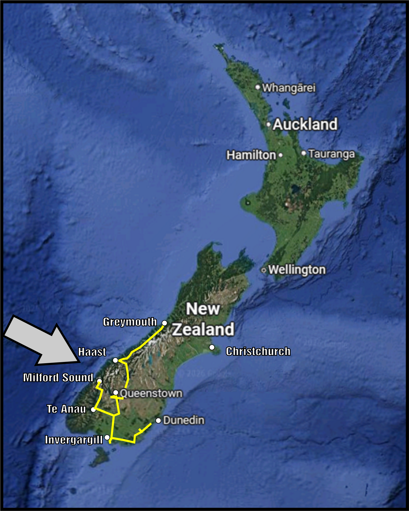
From Dunedin, we drove the coast road as much as possible, to Invercargill.
Stopped to visit an SCA friend at his church residence.


A small park had a few Sequoia trees, as it happens, there are many in New Zealand, often in city centers from 150 years ago.
 We coasted the South and visited the Southernmost point on our whole trip as well as New Zealand (though you can go farther south if you have a boat).
We coasted the South and visited the Southernmost point on our whole trip as well as New Zealand (though you can go farther south if you have a boat).Pretty windblown place. Had to hold onto our hats!

Near Te Anau, we visited a LoTR Anduin river site, and saw a roadside Dalek!
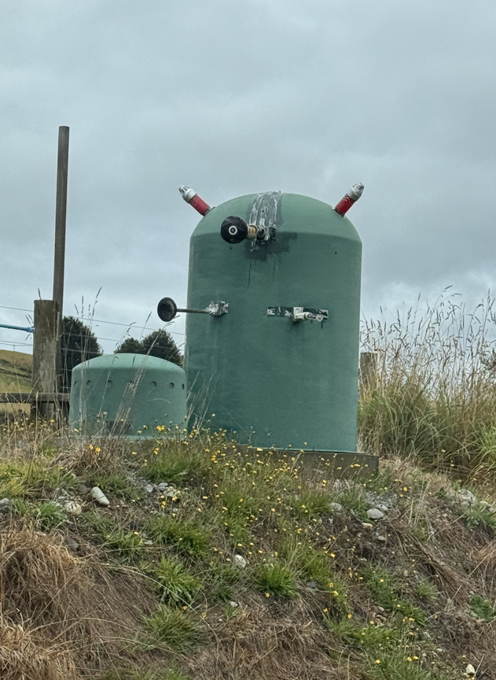
YouTube Time Lapse Te Anau to Milford Sound!
Stayed in a lakeside primitive campsite.
We got eaten alive, even inside Bumble the campervan! Switched to an RV park the next 2 nights.
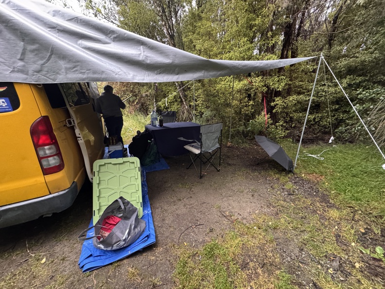
Drove Bumble to Milford Sound and back through mountains and a tunnel!
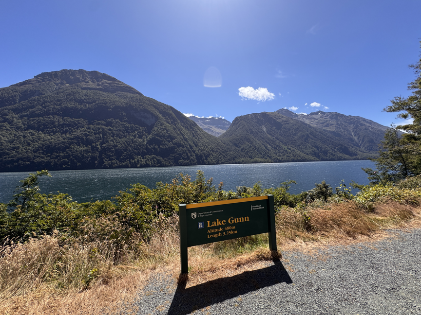
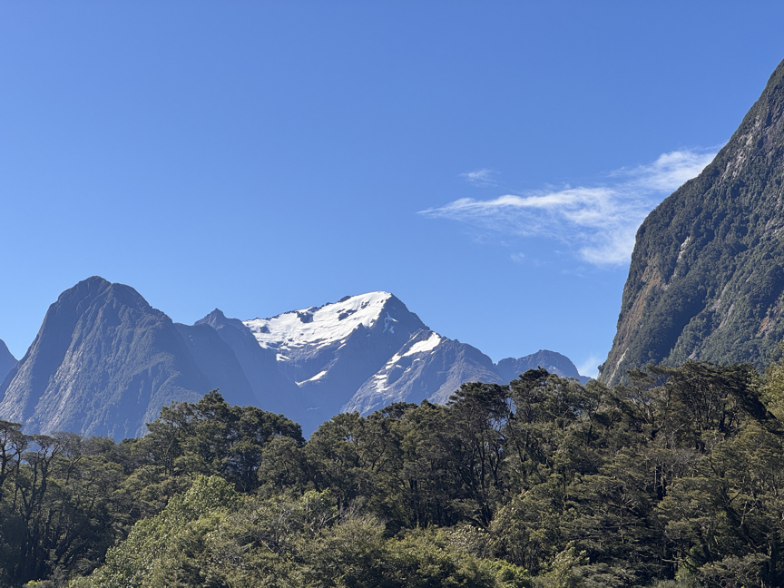
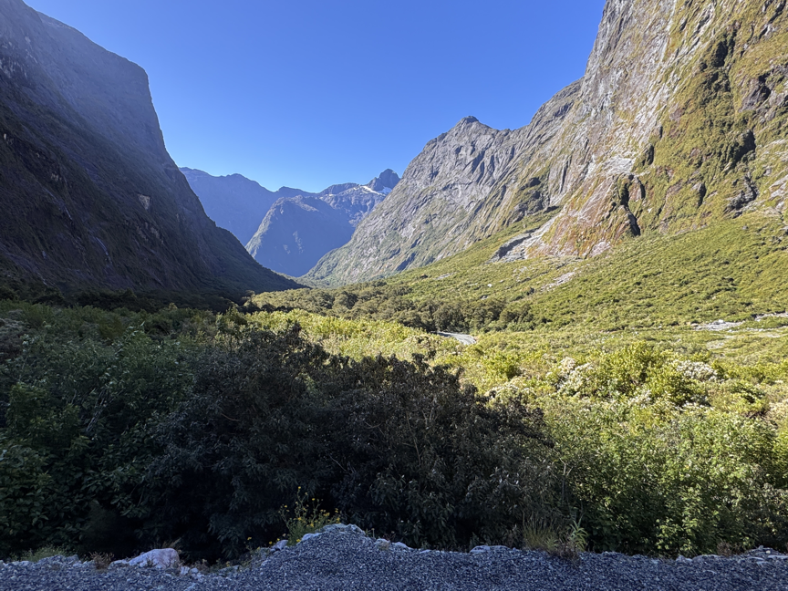
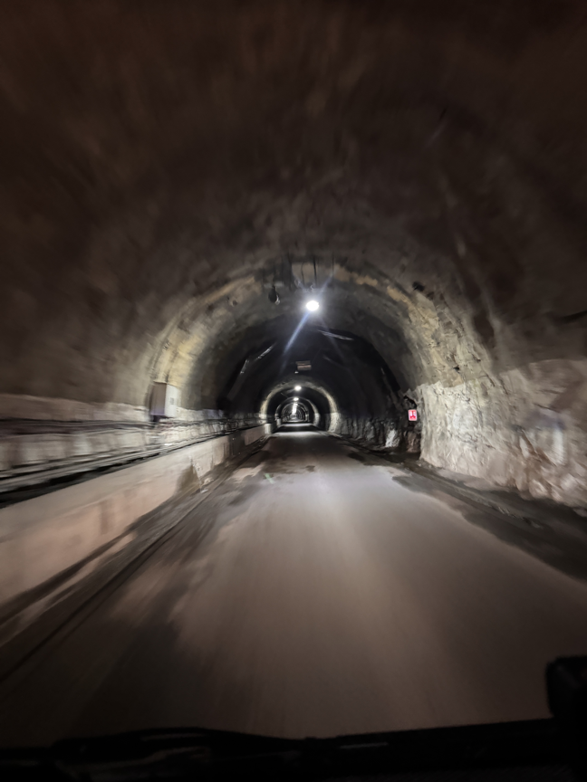
A Kea bird was raiding a cooler (esky) on top of a car.
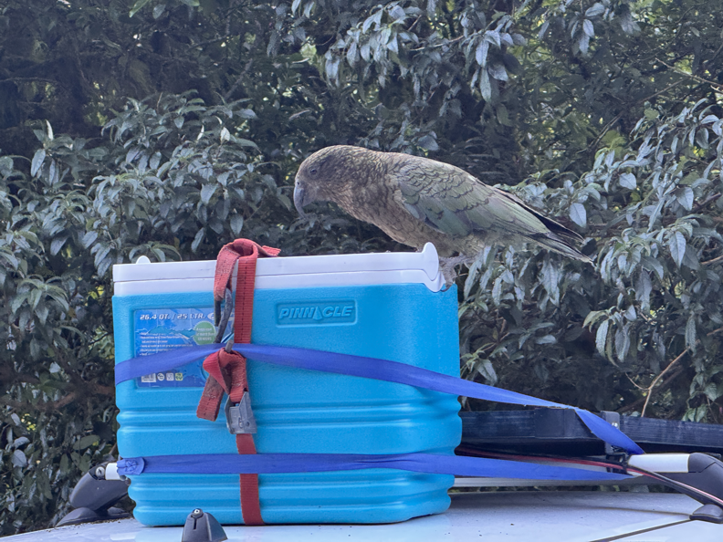
Took video of it and left a note for the car owner, which they saw!
YouTube Naughty Kea Bird
The Lake:
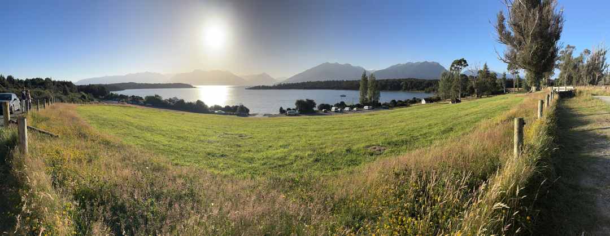
From Te Anau to Queenstown, South Island, New Zealand!
Stopped at 2 Fangorn Forest Lord of the Ring's Filming locations.
Lord of the Rings locations
Lake Wakatipu at Queenstown and the Southern Alps. Seem to be thinking something.
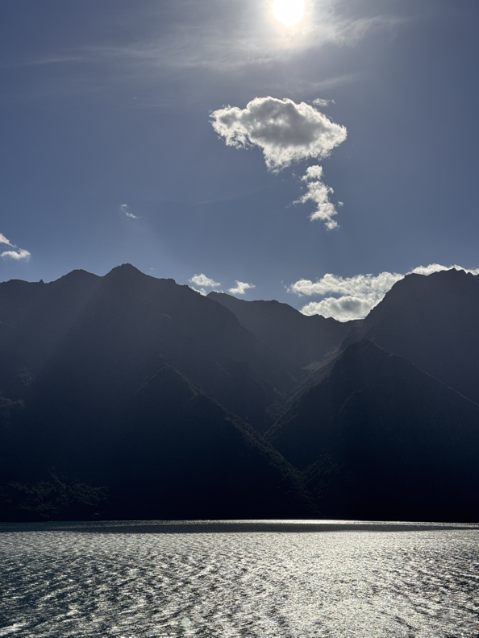
We drove through Cromwell and along Lake Dunstan, then up to the West Coast, via Lake Hawea and Wanaka, to Haast,
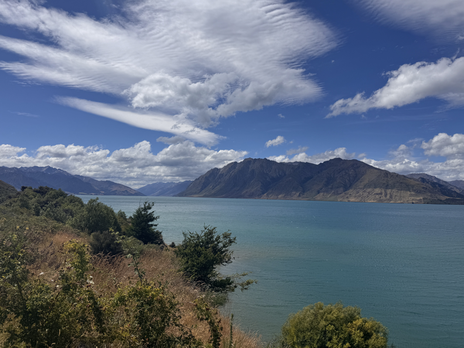
Fantail Falls
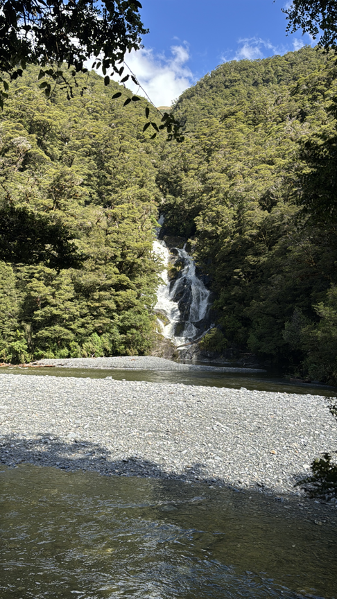
and the Knights Point lookout, and camping in a basic campground near Paringa.
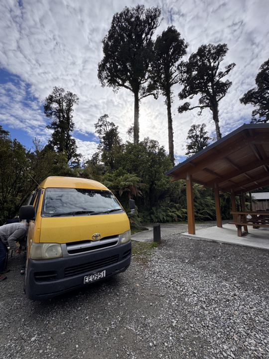
Next day we worked our way up to Hakikita, enjoying the beach with driftwood sculptures and some shopping.
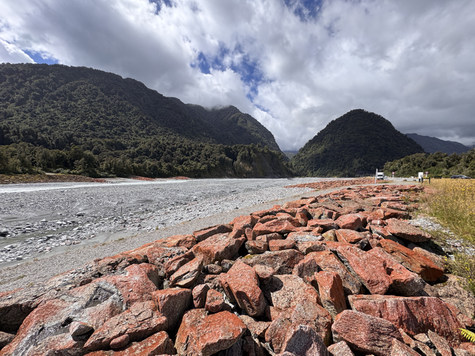
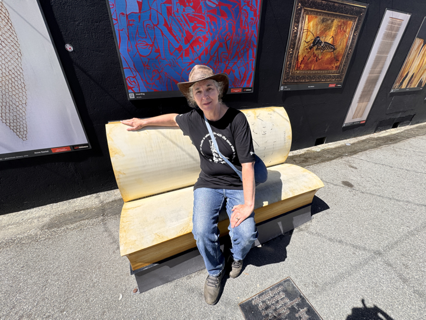
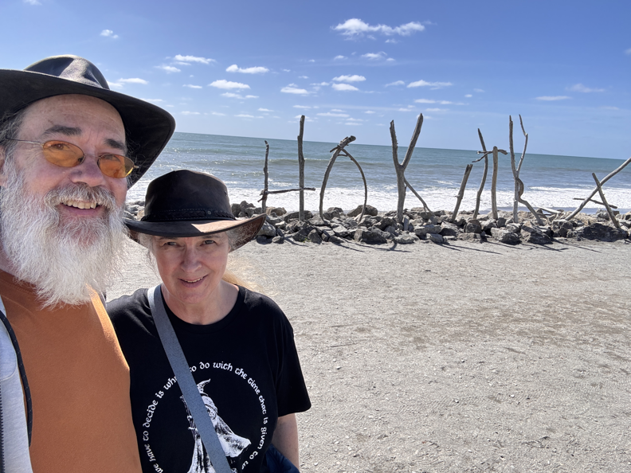
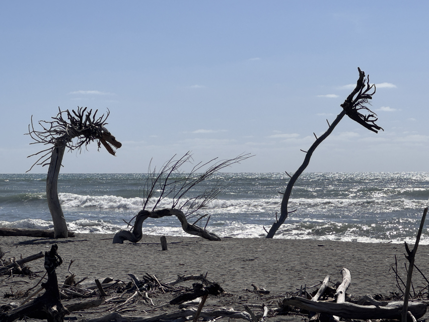
We stayed at a terrific Hostel in Greymouth.
To Christchurch and up to Nelson, South Island, New Zealand!